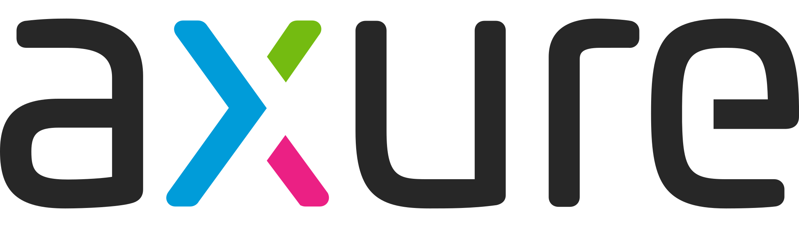
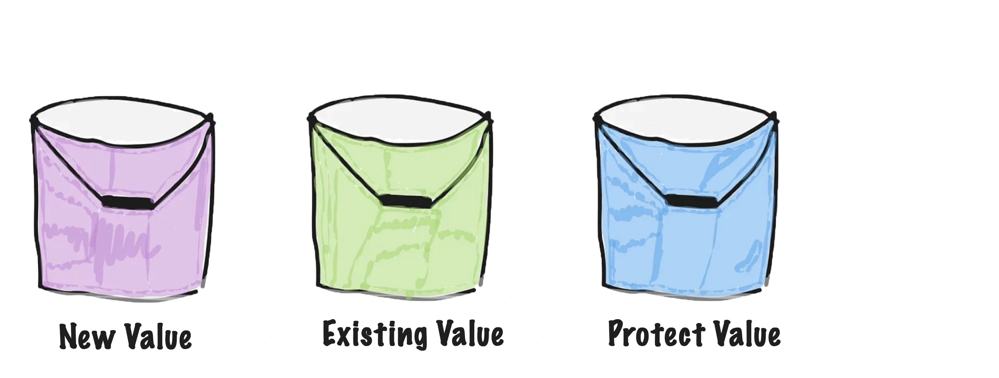
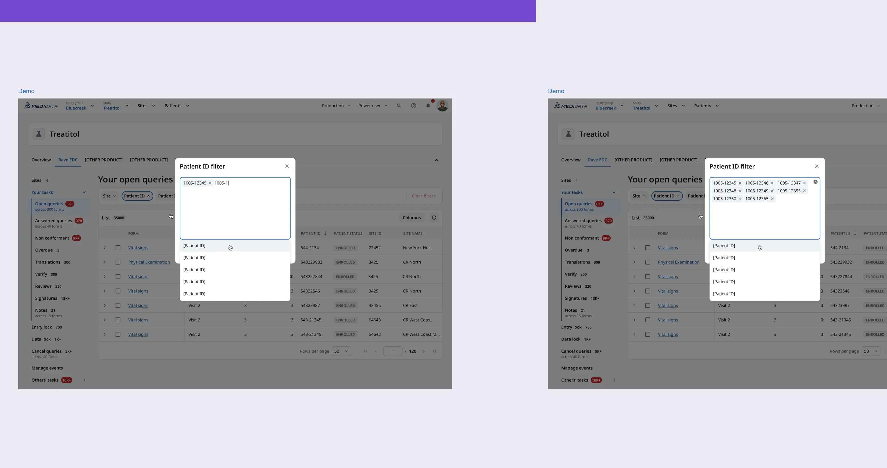
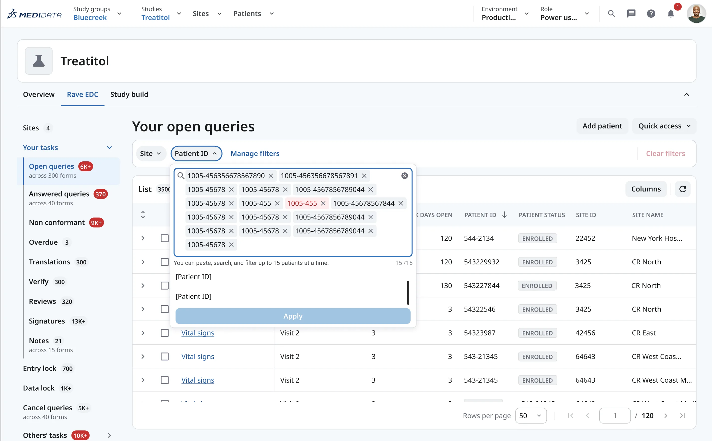
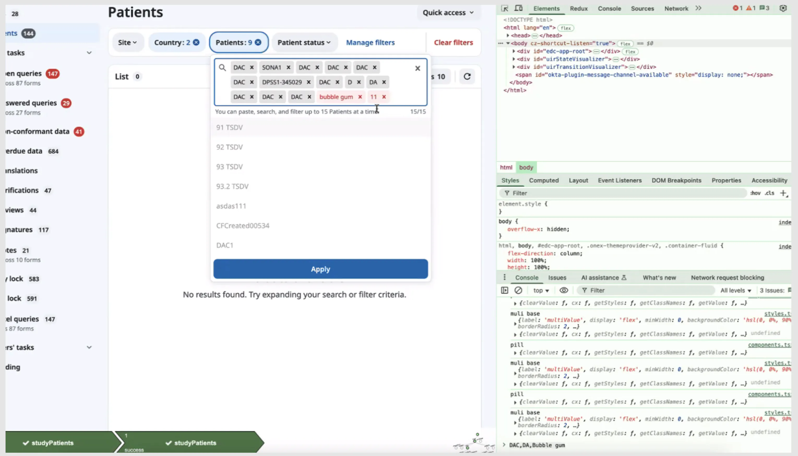
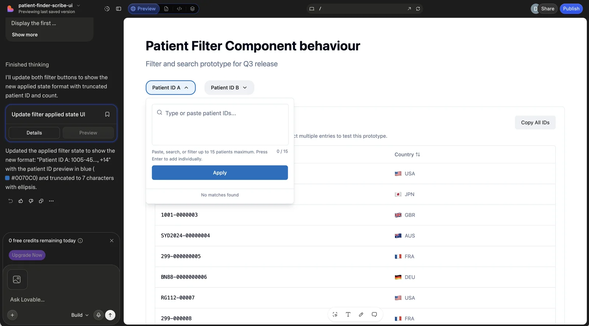
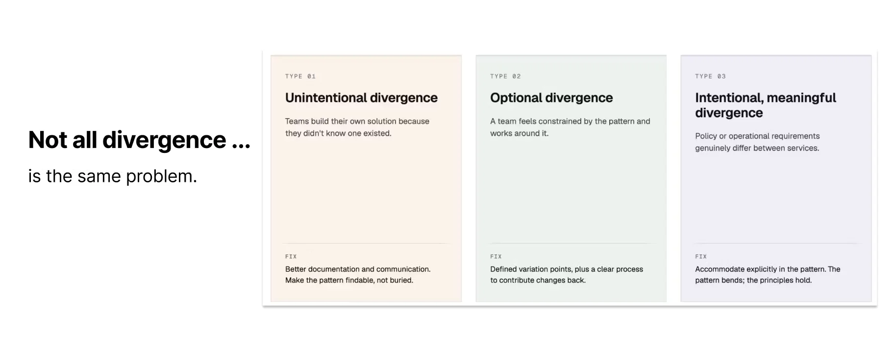
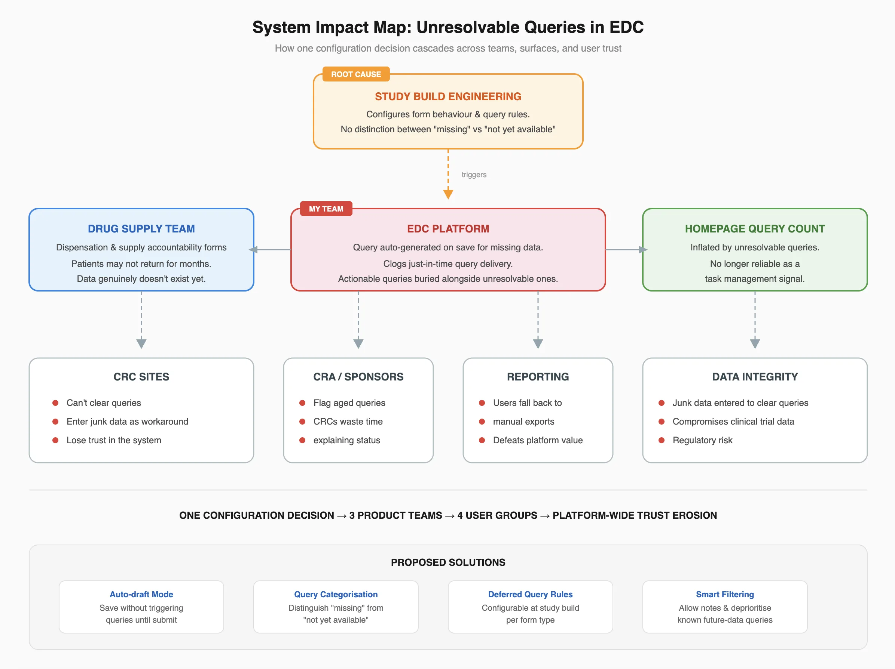

Reimagining Data Capture: Laying the Foundation for a Smarter, Seamless, and Future-Ready Experience
Summary of case study
0:00 / --:--
A snapshot of designs I worked on, including synthetic patients, global task filters, and data capture pages. Some prototypes were built in Axure for its advanced logic and realistic usability testing. More recently, I use AI tools to achieve the same outcomes faster.
Loading...
The Problem, Every Successful Company Eventually Has to Evolve
Medidata faced a pivotal challenge: despite its dominant global market share, its flagship Rave Classic (2000) ran on ageing Microsoft technology approaching end of life. The 2017 redesign (Rave EDC) helped maintain that position, but Classic continued to compete internally, splitting that share and cannibalising resources and investment.Even as more customers migrated, some as late as mid-2025, the change remained unpopular. Complaints and feedback exposed critical issues that slowed adoption and forced clinical teams into workarounds. Meanwhile, competitors were advancing modern single-codebase platforms with seamless, end to end data experiences, enabling users to explore data across integrated product areas without silos, threatening revenue and increasing Medidata's exposure to disruption.
What Are Electronic Data Capture Products?
EDC systems are cloud-based applications used in clinical trials for entering, reviewing, and managing patient-level data. Study teams capture medical results in structured forms or import data from other connected systems. A quick note: this case study focuses on manual data entry. I also worked on EHR (Electronic Health Record) integration, which automatically imports patient data into the system, eliminating the need for manual entry.
My Role
I led EDC's data pages (the patient record, a large section of the redesign) working alongside my design partner Anastasiya in a deliberate divide-and-conquer model. Ownership of different areas, to explore with regular syncs to coordinate findings and designs.
After our Lead Designer Michael left in 2023, we expanded scope to study listing pages. I independently led AI features, Electronic Health Record integration, and other areas tying into the wider platform ecosystem.
Team
Product Director (PM) 🇺🇸
Business Analyst 🇺🇸
System Architect 🇺🇸
3 Front End Engineers 🇺🇸
3 QA 🇺🇸
2 Data Scientists 🇺🇸
Design System team 🇵🇱🇺🇦🇮🇳🇺🇸
Lead Designer (left 2023) 🇺🇸
Senior Designer — Me 🇬🇧
Designer (agency) 🇵🇱
Design Director (left 2024, overall support) 🇺🇸
What I did 👩🏾💻
De-risking decisions
Collaboration
Prototyping
Competitive Analysis
User Interviews
Stakeholder Alignment
Introducing interactive patterns to emerging design systems
Tools
Figma
Storybook
Loom
Lovable
Slack
Zoom
Notion

Pen & Paper
Gemini
GitHub
ScreenFlow
Duration
~2.5 years (Multi-phased releases and dependencies. Last release for EDC redesign mid 2026)
Business Constraints and Challenges
Started as a visual reskin, to upgrade to the new evolving design system; past design efforts struggled with domain credibility to convince executives to make changes.
Technical debt — Outdated APIs, Angular to React migration, strict backend constraints and a lean engineering team.
Cross-product coordination — overall navigation information architecture, design system, study build & platform integration required close alignment to lessen the "Frankenstein" experience.
User Problems & Research Insights
Lost task visibility and accuracy — Users lost sight of outstanding tasks when drilling into patient records, forcing unnecessary navigation or reliance on exported reports.
Performance issues — Poor system performance pushed users toward unnatural workarounds or competitors.
Poor integration & data persistence — Users re-entered the same patient data in multiple places; related information was buried.
Broken accessibility — Poor readability, keyboard tab order didn't match expectations for fast data entry workflows.
Real estate — Feedback from users and product showed that each redesign reduced visible data density. Users wanted grids to be more compact so they could see more data before scrolling.
Highlights from a 10-minute Loom I created to surface research themes for stakeholders. Credited past designers whose earlier work helped the team to avoid bias or see patterns within our conclusions. Click to pause.
Loading...
Watch research highlights on Loom ↗
How Might We Goals
Build a cleaner interface for future capabilities (think AI automation, imported patient records, all that good stuff)
Speed up data entry — with patient Electric Health Record (EHR)‑to‑EDC integration still the future (and paid) enhancement, we still needed to deliver immediate value by reducing errors, removing unnecessary queries, and tackling everyday friction.
Restore task awareness — Bring back what made Rave Classic loved by its users while keeping the best working efficiency gains from the 2017 redesign.

Sales demo impact — Make the improvement visually obvious so clients can see the immediate AHA moment.
Link to Individual Designs
🧑🏾💻 Quick links to deep dive into specific snapshot solutions
After a lukewarm end of year 2022 pitch, executive buy-in came in 2023 once we demonstrated interactive prototypes and clear productivity gains. The redesign is rolling out in phases across Q4 2025 to Q3 2026. Some platform changes by other teams, particularly the homepage redesign, received negative feedback on Reddit. Through ongoing user research and feedback analysis, we helped identify key issues. The EDC redesign was received more positively. The images below show a snapshot of post-launch customer feedback.
Loading...
Business outcomes
Removed unused features, reducing years of design/engineering debt and lowering engineering maintenance, increasing company efficiency.
The initiative demonstrated the ROI of embedded research — fewer rework cycles, fewer post-release fixes, and clearer guidance on where engineering should focus backend refactoring.
Can't confirm if the effort enabled a smoother Classic-to-new platform migration (unified product) or laddered up to increase renewal but i do hope it did.
User Benefits
Users can reliably glance left for a visual to-do summary, streamlining workflows and boosting productivity by 40–50% fewer clicks. Confirmed from usability studies and beta pilot releases.
Increases in discoverability, improved scanning behaviour and reduced support tickets by making core features easier to find. Pilot report revealed faster time to value, especially for newer features.
🧠 All Brains On Deck Approach
Loading...
I partnered with the Lead Designer and PM to broaden discovery beyond end users. Instead of large group workshops, we ran individual calls with solution experts, sales, marketing, and engineering — the format that surfaces candid, unfiltered insight.
What we heard was consistent: clients saw us as stagnant. Legacy dependencies were driving performance issues. And the competitive landscape was shifting fast, with eSource and eCOA companies moving into the EDC market.
Hover to see system maps of interconnected tasks and professionals
Loading...
System maps of interconnected tasks
Meet the Users
Sites
🧑🏻⚕️ Clinical Research Coordinator (CRC) Conducts visits, enters patient data from multiple sources, resolves queries. Constantly interrupted.
👩🏾⚕️ Study Nurse Interacts with patients, enters data & queries. Constantly interrupted.
👩🏽⚕️ Data Coordinator (also known as a CRC, or confusingly, as a Data Manager) Enters data from site personnel, resolves queries.
🧑🏻⚕️ Clinical Research Associate (CRA) Monitors sites, ensures protocol compliance. Like an inspector or referee for the trial.
🧑🏽💻 Data Manager (DM) Cleans, validates, and packages clinical data for statisticians.
A visual summary overview of all personas and their day-to-day goals and actions within the system. Click to explore details.
Where the Best Ideas Win (Collaboration)
Alongside product, we brought engineering into design early to reduce surprises and handoff friction. In a group with strong opinions and history, psychological safety mattered. We kept everyone informed but were selective about which feedback shaped direction. Sharing research clips rather than just conclusions meant people felt heard and kept bringing their views, which helped us catch blind spots early.
In practice this meant 30-minute syncs to surface blockers, debate solutions, and flag API needs before they became constraints. Functional prototypes instead of static mockups. Tesler's Law applied deliberately. If complexity could live in the system, done programmatically, it shouldn't live in the UI.
I also pushed to get design included in cross-product engineering meetings, bug bashes, and peer reviews or making sure we always had access to sandbox. And brought in accessibility specialists early, after noticing users were navigating primarily by keyboard. Something that needed to be designed for, not retrofitted.
Figma files with JTBD flow with annotations, Loom walkthroughs, and a component tracker that directors referenced throughout the redesign.
Overall Research Plan — Derisking Assumptions and Increasing Design Quality
📁
I split data page design ownership to give my design partner and me autonomy to explore ideas while allowing me to focus on cross-product challenges. Though initially unpopular, this moved us from UI reskinning to outcome-driven work with deeper research and bolder UX bets.
🧍
Interviewed 55+ participants over 2.5 years, either in 1-on-1 or group sessions, different professionals with 28% returning — building trust through short, focused sessions that respected their time and supported continuous discovery habits. We also shared multiple snippets with designers on other initiatives to influence their teams.
🕵🏾♀️
Reviewed prior research to identify trends, such as Data Managers shifting from patient-level detail to site-wide tasks, which helped us prioritise features that served multiple personas over their isolated frustrations and contributed to a vision of removing that persona from EDC altogether.
Design 01
Streamlining Patient Data Workflows, Reducing Back and Forth Navigation
The workflow trapped users in a loop: find patient → drill in → lose the context they needed → navigate back → reapply filters → repeat. With a monochromatic interface and no persistent task visibility, actions like resolving or managing data issues (queries) disappeared the moment a patient record was opened.
Redesign — 2025Redesign — 2017
My idea was simple: make patient visits folders (left hand side) communicate more at a glance. I added right-aligned status badges — red for critical blocking work, yellow for next priority, neutral for low priority tasks that could wait, coordinating with Michael for the left side study visit page. In space-constrained views, only the highest-priority indicator shows with an overflow indicator, keeping things clean without losing signal. This visual language was aligned across EDC and with other platform designers to avoid cross-application conflicts.
Smart filtering and form search reduced reliance on the matrix grid that disappeared once a user selected a patient form. A hover-to-preview the tasks on visit folders (like an accelerator) meant users could check tasks without drilling in. And a consistent left-side pattern lets users glance progress or outstanding tasks from any listing or detail page, updating dynamically without a refresh.
Scrappy design experiments and multiple design iterations, excerpted from a compilation capturing successes and failures during concept testing. Click to pause.
Loading...
Design 02
Design System Contribution: Patient Search & Filter Prototype
Data Managers were spot-checking patient progress on the drugs more frequently. They were receiving lists of 15 to 100 patient IDs by email or spreadsheet, then locking records one by one. The design system's suggestive-text component gave them no other option. One Data Manager put it bluntly: "We now have a problem with Medidata."
I designed a bulk-paste solution with a 15-tag maximum that balanced performance with real-world needs and edge cases. The pattern reduced workflow time to minutes and became a reusable design system component that Clinical Data Studio (another product) could adopt.
Design system option
Loading...
New filter designed and refined with my front end lead.
Below final design solution, including sandbox screenshots showing iterative conversations with engineers and refined Figma screens
Loading...




Loading...
I put together a component audit of the redesign, basically a proactive spreadsheet that keeps everyone informed and aligned. It displayed which components the Design System team needs to prioritise across products, and which ones EDC engineers will need to build from scratch while still following system standards, patterns and contribute back. Each component tagged by user value, existing, or new, making it clear its importance and transparency to build or weight the pros and cons.
The design system should be your default, but sometimes a user need is valuable enough to justify going beyond it. Here's a quick guide on when and how to diverge, inspired by a book I read to help guide us.

Another pattern that made it into the design system: a smoother, faster, more forgiving time-input for medication. With no strong examples in external design systems and static step by step mocks falling flat, I put together a quick prototype for the team to try.
The Unsaid Legacy Attraction — From Custom Code Workaround to Core Feature
While exploring potential pitfalls of an autosave-to-draft idea, I accidentally uncovered a deeper migration risk to the new redesign. Rave Classic let study builders custom-code features outside the core product. Like Figma plugins, these extensions expanded the platform in ways we couldn't track, leaving us blind to what existed or how widely it was used.
One such extension surfaced during interviews: dummy patients. Site staff needed to preview forms and study builders or DM wanted to run UAT to check and verify dynamically generated fields within the forms before the first live patient started. Without it, problems in the study could go unnoticed and take months to resolve. Only the most well-resourced studies (companies) hacked a solution. Others refused to upgrade from Classic entirely. Populating multiple forms with realistic data for a single patient could take weeks or months.
Loading...
That conversation became one of the value propositions when a Data Scientist realised they could create Synthetic Patient data, transforming an unofficial workaround into a proper product capability using AI to generate realistic historical patient data. The next release will cover the parameters users would like to control what's generated.
Design 04
Discovering a Root Problem from Various Symptoms — How Unresolvable Queries Undermine Trust and Data Integrity Across Clinical Teams
I began to notice a fundamental system flaw showing up in my own as well as other designers' user calls. The platform treated 'not yet available' data the same as 'missing' data. Take drug returns: when patients are given medication, they must bring back any unused study doses at their next visit, which might not happen for weeks or months. The system didn't account for that. It immediately flagged those fields as queries (questions around the entered patient data), creating alerts no one could honestly resolve.
To cope, users entered junk data to clear these query alerts temporarily from the system. If they didn't, these queries would clog up task lists across EDC, Clinical Data Studio, and the Homepage, inflating counts and eroding trust in the whole ecosystem — but the junk data could also be forgotten. Losing accuracy. I mapped the impact and escalated it, showing that a UI patch wouldn't fix a system-level issue. That work was brought to the attention of Design VP and manager to secure a proper future root-cause fix to handle deferred queries and finally stop penalising users for real-world delays.
Visual presentation of the lack of trust and accuracy. A problem to help communicate the issue across different teams.
Loading...

Candid Reflections
My first redesign was tough. Priorities shifted, people moved on, and cross-product dependencies kept growing, so progress often felt slow. It was also my first time working on a high-risk product with a two and a half year timeline, where backend mistakes or bugs could cost Medidata a million dollars a day in client penalties. I was always aware of that pressure, so that's why I made sure engineering had the time and clarity they needed to plan and deliver.
Coordinating multiple roadmaps meant revisiting earlier work, juggling backup designs, and balancing other projects at the same time. Maintaining enthusiasm and managing tension was challenging, especially since we were used to working on shorter projects. I learned when to push with evidence and when to let go, what truly mattered and why. What a foundational release really meant, and how tricky prioritisation can be when trying to keep people focused. Since launch, early client feedback has been positive, and the effort has been worth it.